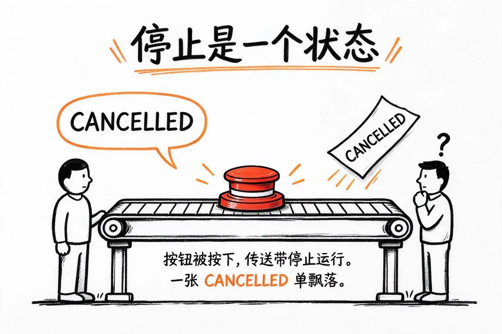
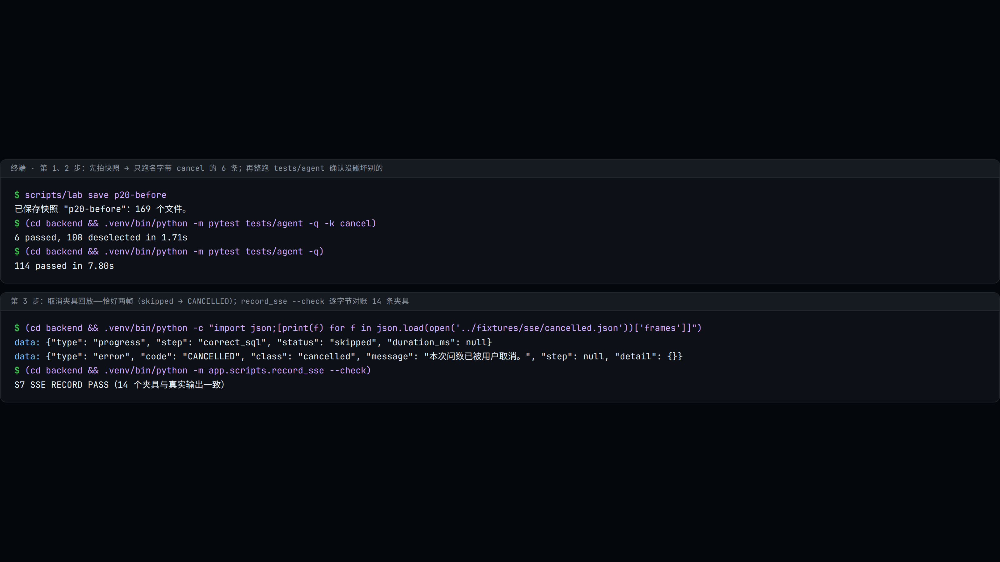

练本 · 阅读版（md 正典派生，改内容请改 manual/page-20.md）
第 20 页 · 守取消：点了停止，系统真的停了吗
前置：L4（守）第三页。本页的判据一条服务都不用：只跑
backend/里的离线测试和一条夹具回放，不需要 MySQL、.env、模型 key，也不需要浏览器；要用第 0 页
make install建好的backend/.venv（缺了先回第 0 页）。命令都在仓库根目录、同一个终端里整段连续执行；括号是子 shell，跑完你还在仓库根目录。第 18 页守账号、第 19 页守策略，本页守取消：用户点「停止」之后，服务端到底是真停了，还是把它当成一次完成？
开始前先确认第 19 页的拆一刀（
forbid_set_operations: false）已还原：先跑
scripts/lab reset p19-before --yes，再自查两处——
grep -n 'forbid_set_operations: true' contracts/sql.policy.yaml应回31: forbid_set_operations: true（无输出 = 还没还原）；
(cd backend && .venv/bin/python -m app.scripts.record_sse --check)应回S7 SSE RECORD PASS（14 个夹具与真实输出一致）。不还原的话，第 2 步会变成
3 failed, 111 passed、第 3 步红在sql_rejected.json 与今天的真实输出不同步；这时拍的p20-before会把坏契约一起存进快照，reset也回不到绿。
这一页构建什么
让取消成为独立状态——不是 done、也不是失败：服务端真的停下、发一条名字叫 CANCELLED 的事件、界面标「已取消」。
判据可重放：做完你得到 6 条取消测试全绿 + fixtures/sse/cancelled.json 的 2 帧（skipped + CANCELLED）+ 夹具与今天的真实输出逐字节一致。
心智模型：「停止」是一个状态，不是「不返回」。

猜一猜
- 用户点了停止，这次问数的终态是：
done、失败，还是第三种？ - 取消发生在第一个步骤边界时，服务端应该发几条事件：1 条（
CANCELLED）还是 2 条？
动手
第 1 步：拍快照。 待会儿拆一刀要改代码，先留退路（同名快照会被拒，重做本页换个名字；回显的文件数因工作区而异）：
scripts/lab save p20-before
第 2 步：跑离线判据。 第一行只跑名字带 cancel 的 6 条；第二行跑 tests/agent 全量，确认你没碰坏别的。两条都退出码 0 才算过：
(cd backend && .venv/bin/python -m pytest tests/agent -q -k cancel)
(cd backend && .venv/bin/python -m pytest tests/agent -q)
第 3 步：回放取消夹具。 夹具是「真字节流的录像」：frames 里每一行就是回放服务器要写给浏览器的一个 data: 帧。
怎么跑：先逐帧打印看事件序列，再让 record_sse --check 用今天的代码重录 9 个场景 + 取消路径（4 条手写夹具只与源码常量比），14 条一起逐字节对账——本页输出就是这 14 条（录制在进程内跑真 HTTP/SSE 管道，不起服务、不用端口、不用浏览器）：
(cd backend && .venv/bin/python -c "import json;[print(f) for f in json.load(open('../fixtures/sse/cancelled.json'))['frames']]")
(cd backend && .venv/bin/python -m app.scripts.record_sse --check)
第 4 步（可选，浏览器）： 想在真实界面上看「已取消」和步骤条停住，跑 make stage6-ui（自起临时后端/前端，不跑不影响本页判据）。
前提：uv、Node、Chrome/Edge 和装好的 frontend/node_modules——没有先 npm install，要联网。
陷阱：脚本里的 uv run 会改写 backend/uv.lock（不在 lab 白名单、reset 救不回），跑完用 git checkout -- backend/uv.lock 还原。
你应该看到
第 1–4 步（节选：只留判据行——第 1 步略去 2 行回显，第 2 步略去 pytest 进度行如 ...... [100%]；# 开头是标注，不是程序输出；秒数随机器变）：
# 第 1 步
已保存快照 "p20-before"：169 个文件。
# 第 2 步
6 passed, 108 deselected in 0.70s
114 passed in 5.67s
# 第 3 步：恰好两帧，先 skipped 后 CANCELLED
data: {"type": "progress", "step": "correct_sql", "status": "skipped", "duration_ms": null}
data: {"type": "error", "code": "CANCELLED", "class": "cancelled", "message": "本次问数已被用户取消。", "step": null, "detail": {}}
S7 SSE RECORD PASS（14 个夹具与真实输出一致）
# 第 4 步（可选，节选）
"distinctSignatures": 6,
"cancelled": true

对账
- 猜 1：第三种，
cancelled。 取消既不是done也不是失败：终态是一条type: "error"的事件，但class: "cancelled"，前端据此把整体状态设成「已取消」，不弹红框。 旧系统在这里写的是status: isAbort ? "done" : "error"——被掐断的查询和成功返回的查询在界面上长得一样，用户看不出区别，统计里取消还混进成功率。 - 猜 2：2 条。 第 1 条
progress是条件步骤correct_sql显式标skipped：流在中途结束，它没跑，但不该永远是一块灰的「还没到」；第 2 条才是CANCELLED。- 为什么用一个
error帧装「不是失败」： - SSE 契约只有
progress/result/error三种 type，所以用class再分三态——failure红框、empty空态、cancelled取消态。
- 为什么用一个
- 三态各要各的处理。
done带result.data（出表格）；failure是class=failure，界面红框、按错误码决定是否重试；cancelled是class=cancelled，界面「已取消」、步骤条停住、不重试也不告警。 合成两种就出事故：取消算done，用户以为查完了；取消算failure，告警和重试把用户主动停止当成故障。 - 停下的同时要收资源。
POST /api/cancel只在CancelRegistry里找到这次问数的开关并拉下；找不到返回{"cancelled": false}（可能已经结束，不是错误）。SSE 流结束时finally里再cancel一次并release注销request_id；工作线程在下一个步骤边界停下，不会把 SQL 白跑完。 - 夹具就是判据。
cancelled.json是录像不是手写样例：record_sse --check用今天的代码重录取消路径、逐字节比对，代码一改就红。它实际覆盖 9 个场景 + 取消路径、4 条手写只比源码常量，本页输出就是这 14 条一起对账；第 21 页逐条拆解这 14 条的覆盖与盲区，本页只盯取消这一条。
你现在拥有：一条能把「停止」与「完成」「失败」分开的判据（6 条测试 + 1 条夹具），和一句可复用的话：「停止」是一个状态，不是「不返回」——服务器必须发一条有名字的事件说「我停了」。
拆一刀
打开 backend/app/agent/cancel.py，找到 CancelToken.cancel（cancel.py:37，方法体内唯一一行 self._event.set()；同文件 L64 还有一个 CancelRegistry.cancel，别改错）。
改法：把 self._event.set() 改成 pass（别只删这一行：缩进块空了会 IndentationError）——停止开关永远不会被拉下，正是旧系统「点了停止、查询照跑完」的复现。
验证：重跑第 2、3 步的判据：
(cd backend && .venv/bin/python -m pytest tests/agent -q -k cancel)
(cd backend && .venv/bin/python -m app.scripts.record_sse --check)
# pytest（节选：只留判据行，原文 FAILURES 在前、汇总在末）：6 条里红 2 条
FAILED tests/agent/test_orchestrator.py::test_cancel_stops_the_run_and_reports_cancelled
FAILED tests/agent/test_orchestrator.py::test_cancel_midway_stops_the_remaining_steps
2 failed, 4 passed, 108 deselected in 0.72s
# 第一条：断言终态是 CANCELLED
assert terminal["code"] == "CANCELLED"
E AssertionError: assert 'EMPTY_RESULT' == 'CANCELLED'
# 第二条：终态是 result（完成），没有 code 字段
assert terminal["code"] == "CANCELLED"
E KeyError: 'code'
# record_sse --check：退出码 1
FAIL: SSE 夹具与真实输出不同步：
- cancelled.json 与今天的真实输出不同步
只红 2 条是对的。 另外 4 条只测接口表面与码表（X-Request-Id 要暴露、POST /api/cancel 对不存在的 request_id 返回 false、CANCELLED 是独立 class），它们不检查「真的停下」——判据分两层，缺一层就漏。
不要照着 record_sse 的提示去重录夹具，那是修好代码后重新生成用的：在拆一刀的坏代码上重录 = 用坏代码覆盖夹具。
后果：cancelled.json 会被录成 24 帧「正常完成」流（和 happy.json 的 24 帧逐帧相同），--check 反而立刻变绿、判据失效。
还原：用 scripts/lab reset p20-before --yes，但提示里的 uv run 还会改写 backend/uv.lock（不在 lab 白名单、reset 救不回），要 git checkout -- backend/uv.lock。本页用快照还原并回绿：
scripts/lab reset p20-before --yes
(cd backend && .venv/bin/python -m pytest tests/agent -q -k cancel | tail -1)
(cd backend && .venv/bin/python -m app.scripts.record_sse --check | tail -1)
# 还原（节选）
已恢复快照 "p20-before"：
覆盖 1 个文件（内容不同）
现在工作区与快照 "p20-before" 完全一致。
# 回绿
6 passed, 108 deselected in 0.59s
S7 SSE RECORD PASS（14 个夹具与真实输出一致）
结论：取消被拆掉后，查询照样跑完，终态变成 EMPTY_RESULT 或 result——看起来「更正常」了，恰恰是事故：用户主动停止，系统却报告它完成了。